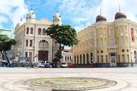
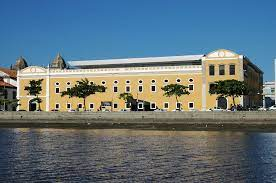

Praça do Marco Zero
A Praça do Marco Zero é um espaço de convivência com vista para o Rio Capibaribe. É um local de referência e importante ponto turístico do Recife, especialmente pelo seu monumento que marca o início das estradas que percorrem o Brasil.
Cais da Alfândega
O Cais da Alfândega é um complexo cultural e histórico situado à beira do Rio Capibaribe. Abriga espaços para exposições, apresentações culturais, bares, restaurantes e é conhecido por sediar eventos e feiras culturais.
